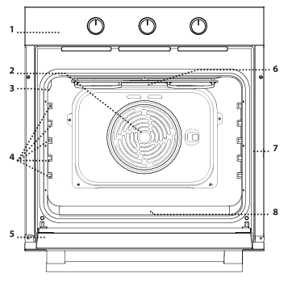
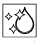
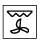

Oven instructions
Product description
- 1. Control panel
- 2. Fan
- 3. Lamp
- 4. Side racks
- 5. Door
- 6. Upper element / Grill
- 7. Serial number plate
- 8. Lower element (not visible) 

Control panel
- 1. Function selector knob
- 2. Timer knob
- 3. Thermostat knob
- 4. Thermostat/Preheating LED

Oven functions
- Off: to turn off the oven.
- Light: to turn on the cavity light.
- Static: to cook any type of dish on a single shelf. It is preferable to use the 2nd level.
- Diamond Clean: the steam action released during this special low-temperature cleaning cycle allows for easy removal of dirt and food residues. 
- Fan: to bake cakes with liquid filling on a single shelf. This function can also be used for baking on two shelves.
- Grill: to grill steaks, kebabs, and sausages, gratin vegetables, or toast bread.
- Turbo Grill: to roast large pieces of meat (legs, roast beef, chickens). 
- Defrost: to speed up the defrosting of food.


Daily use
- Select a function: turn the selector knob to the symbol of the desired function.
- Start a manual function: turn the thermostat knob to set the desired temperature.
- Preheating: the lit thermostat LED indicates that the preheating phase has been activated.
- Set the timer: turn the timer knob fully clockwise and then bring it back to the desired duration, proceeding counterclockwise.
Cooking table
- Rising cakes: 150 - 170°C for 30 - 90 minutes at level 2.
- Filled cakes: 160 - 200°C for 35 - 90 minutes at level 2.
- Cookies/Cupcakes: 160 - 180°C for 15 - 35 minutes at level 2 or 3.
- Pizza/Focaccia: 220 - 250°C for 10 - 25 minutes at level 1 or 2.
- Lasagna/Baked pasta: 190 - 200°C for 45 - 65 minutes at level 2.
- Pork roast with rind: 180 - 190°C for 110 - 150 minutes at level 2.
Care and cleaning
- Clean the external surfaces with a damp microfiber cloth.
- Clean the internal surfaces after each use, allowing the oven to cool.
- Activate the Diamond Clean function for optimal cleaning of the internal surfaces.
- Soak the accessories with dishwashing detergent after use.
Useful tips
- Use the Fan function to simultaneously cook different foods on different shelves.
- Use dark metal accessories or pyrex or ceramic pots and accessories for longer cooking times.
If you encounter any problems, contact the host, Alessandro.